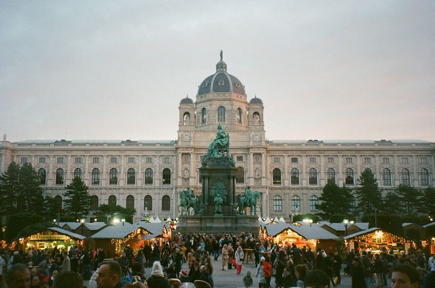

🌸 Katalog Paket Tour Europe & UK 🌸
Pilih petualangan terbaikmu, mulai dari paket spesial United Kingdom hingga keliling benua Eropa!

Golden Root Imperial Heritage (15H)
Praha • Wina • Budapest • Salzburg • Munich
Menelusuri jejak kemegahan kerajaan dinasti Eropa Tengah, istana emas klasik, dan kota tua penuh romansa.

UK Royal & Classic Highlights (9H)
London • Oxford • Bath • York • Edinburgh
Menjelajahi ikon kota London, universitas klasik Oxford, pemandian kuno Bath, hingga kastil Skotlandia.

Spring Bloom & Keukenhof (12H)
UK • Prancis • Belgia • Belanda • Swiss
Naik Eurostar ke Paris, mengunjungi festival tulip Keukenhof, dan menikmati pemandangan alam Swiss.

Summer UK & Riviera Coast (14H)
UK • Prancis • Monako • Swiss • Italia
City tour London dan Paris, menyusuri indahnya pesisir Mediterania dan tempat bersejarah di Italia.

Autumn Trail & Central Europe (13H)
UK • Prancis • Jerman • Austria • Italia
Menikmati daun gugur di London, kawasan kastil tua Jerman, dan desa tepi danau Hallstatt.

Winter Festive & Alpine Snow (14H)
UK • Prancis • Belanda • Swiss • Austria
Winter Wonderland London, pasar natal Amsterdam, dan keseruan main salju di Mt. Titlis Swiss.